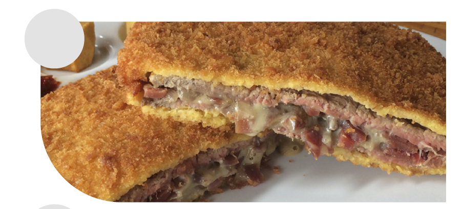
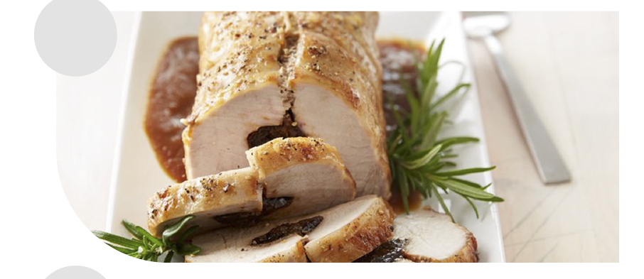
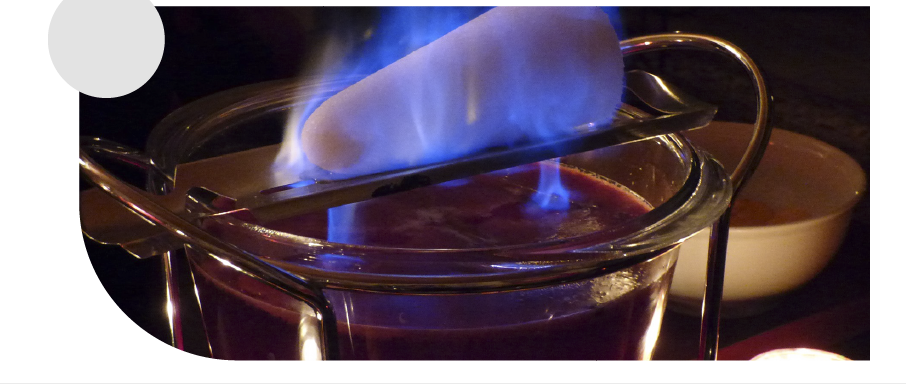

3. Look quickly at the recipes and match each one with the picture

RECIPE 1: All over the world there are different types of dishes for everyone’s taste and are prepared in different ways. Let’s go to Europe where we can find the Feuerzangenbowle that is a traditional German alcoholic drink,
often part of a Christmas or New Year's tradition.
This is how you prepare it:
- Heat the wine in the cooking pot, add the spices and orange slices. About 60°C is enough, or you will lose all of the alcohol. You can just test it by trying something with a spoon. It should be warm, but not very hot.
- Place the pot on a table.
- Soak the sugar loaf with rum and place it over the pot
- Call together all your guests, give a short speech and light the sugar loaf.
- Use the metal ladle - keep sipping rum over the sugar loaf regularly to keep it burning.
- Stir the Feuerzangenbowle before serving
- But if you appreciate meat cuts, the larding pork tenderloin is a great option. You will need: Pork tenderloin - slices of bacon - rosemary - garlic clove - Extra virgin olive oil - Salt and pepper
This is how you prepare it:
- Heat the wine in the cooking pot, add the spices and orange slices. About 60°C is enough, or you will lose all of the alcohol. You can just test it by trying something with a spoon. It should be warm, but not very hot.
- Place the pot on a table.
- Soak the sugar loaf with rum and place it over the pot
- Call together all your guests, give a short speech and light the sugar loaf.
- Use the metal ladle - keep sipping rum over the sugar loaf regularly to keep it burning.
- Stir the Feuerzangenbowle before serving
- But if you appreciate meat cuts, the larding pork tenderloin is a great option. You will need: Pork tenderloin - slices of bacon - rosemary - garlic clove - Extra virgin olive oil - Salt and pepper
RECIPE 2: Preparation:
- Remove residual fat from the tenderloin and make medallions about 3 cm high. Rub the meat with a garlic clove and wrap the meat tightly with the bacon strips. Drizzle a little oil onto the medallions.
- Heat the grill. Cook both sides of the pork medallions and the outer layer for 3 minutes each.
- Remove the meat from the grill and add 3 tablespoons of water onto the grill in order to create the sauce that will be served on the medallions.
- Remove residual fat from the tenderloin and make medallions about 3 cm high. Rub the meat with a garlic clove and wrap the meat tightly with the bacon strips. Drizzle a little oil onto the medallions.
- Heat the grill. Cook both sides of the pork medallions and the outer layer for 3 minutes each.
- Remove the meat from the grill and add 3 tablespoons of water onto the grill in order to create the sauce that will be served on the medallions.
RECIPE 3: On the other hand, there is Cachopo, a Spanish dish which is characteristic of Asturian cuisine. It consists of two large veal fillets and includes ham and cheese. The dish is eaten fried and hot after being breaded in eggs and breadcrumbs, and it is usually served garnished with potatoes, peppers, or mushrooms
There are multiple variables of this dish including fish cachopos, chicken or pork cachopos stuffed with seafood, meat, mushrooms, peppers, cheese, asparagus, etc.






